- 2-pentanone and 3-pentanone
- 2-pentanone and 3-methyl-2-butanone
- 2-pentanone and pentanal
- 3-pentanone and 3-methyl-2-butanone
- 1.71, 1.40, 1.36
- 1.71, 1.36, 1.40
- 1.36, 1.40, 1.71
- 1.36, 1.71, 1.40
(A) True particles are able to pass through filter paper and not in semipermeable membrane.
(B) Colloidal particles are able to pass through filter paper and not in semipermeable membrane.
(C) Solubility of a substance is its maximum amount that can be dissolved in a specified amount of solvent at a specified temperature.
(D) A mixture of a n-hexane and n-heptane forms an ideal solution.
(E) The solutions which show a large positive deviation from Raoult's law form maximum boiling azeotropes.
- (B), (C) and (D) only
- (A), (B) and (D) only
- (A), (E) and (D) only
- (B) and (E) only
- 1.5
- 1.33
- 2
- 1
- 12 kcal
- 41 kcal
- 13.8 kcal
- 52 kcal
- Mn2+
- Fe2+
- V2+
- Cu2+
- H2SO3 > H2S2O8 > H2SO4
- H2S2O8 > H2SO4 > H2SO3
- H2S2O8 > H2SO3 > H2SO4
- H2SO4 > H2SO3 > H2S2O8

- A-3, B-5, C-2, D-1, E-4
- A-3, B-5, C-4, D-1, E-2
- A-3, B-5, C-6, D-1, E-2
- A-3, B-5, C-2, D-6, E-4
- Buna-S is a copolymer of buta-1-3-diene and styrene.
- PHBV is a biodegradable polymer.
- In vulcanization, the formation of sulphur bridges between different chains make rubber harder and stronger.
- Natural rubber has the trans-configuration at every double bond.
- U2+/U and Y2+/Y
- Y2+/Y and U2+/U
- U2+/U and Z2+/Z
- Z2+/Z and U2+/U
- 66 g
- 1.32g
- 33g
- 99g
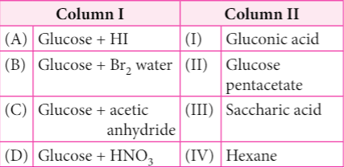
- (A)-(IV), (B)-(I), (C)-(II), (D)-(III)
- (A)-(IV), (B)-(III), (C)-(II), (D)-(I)
- (A)-(III), (B)-(I), (C)-(IV), (D)-(II)
- (A)-(I), (B)-(III), (C)-(IV), (D)-(II)
- p-nitrophenol, p-methoxyphenol, p-methylphenol
- p-methylphenol, p-methoxyphenol, p-nitrophenol
- p-nitrophenol, p-methylphenol, p-methoxyphenol
- p-methoxyphenol, p-methylphenol, p-nitrophenol.
- Cr3+ and Cr2O7-2 are formed.
- Cr2O7-2 and H2O are formed
- CrO4-2 is reduced to +3 state of Cr.
- CrO4-2 is oxidised to +7 state of Cr.
Statement-II : All chiral molecules have chiral centres.
- Statement-I and statement-II are correct and statement-II is the correct explanation of statement-I.
- Statement-I and statement-II are correct but statement-II is not the correct explanation of statement-I.
- Statement-I is correct but statement-II is wrong.
- Statement-I is wrong but statement-II is correct.
(i) Oxygen undergoes sp3 hybridisation.
(ii) Due to presence of two lone pairs of electrons on oxygen, the H-O-H bond angle is 118.4°.
(iii) Due to angular geometry, the net dipole moment of water is not zero, m = 1.84 D.
- (i) and (ii)
- (ii) and (iii)
- (i) and (iii)
- only (ii)
- XeO4
- XeF4
- XeF2
- XeO3
- the difference in energies of reactants and products
- the sum of energies of reactants and products
- The difference in energy of intermediate complex with the average energy of reactants and products
- The difference in energy of intermediate complex and the average energy of reactants.
- dsp2, +1, square planar
- sp3, +4, tetrahedral
- sp3d, +2, trigonal bipyramidal
- d2sp3, +6, octahedral.
- It decomposes when added to the food items.
- It provides a huge number of calories to the food.
- It is difficult to control the sweetness of food while using it.
- It increases the volume of the contents to a large extent.
- The slag is lighter and has higher melting point than the metal.
- The slag is lighter and has lower melting point than the metal.
- The slag is heavier and has higher melting point than the metal.
- The slag is heavier and has lower melting point than the metal.
- NA/2
- 8NA
- NA/8
- NA/16
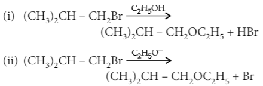
The mechanisms of reactions (i) and (ii) are respectively
- SN1 and SN2
- SN1 and SN1
- SN2 and SN2
- SN2 and SN1
- Proteins are polyamides formed from amino acids.
- Except glycine, all other amino acids show optical activity.
- Natural proteins are commonly made up of L-isomer of amino acids.
- In α-amino acids, –NH2 and – COOH groups are attached to different carbon atoms.
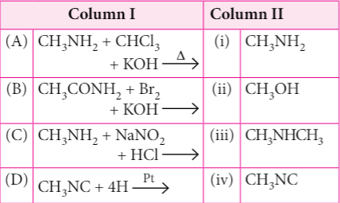
- (A) → (i), (B) → (ii), (C) → (iii), (D) → (iv)
- (A) → (ii), (B) → (iii), (C) → (iv), (D) → (i)
- (A) → (iv), (B) → (i), (C) → (ii), (D) → (iii)
- (A) → (iii), (B) → (iv), (C) → (i), (D) → (ii)
I. La(OH)3 is least basic among hydroxides of lanthanides.
II. Zr4+ and Hf 4+ possess almost the same ionic radii.
III. Ce4+ can act as an oxidizing agent. Which of the above is/are true?
- I and III
- II and III
- II only
- I and II
- acidified KMnO4
- alkaline KMnO4
- acidified K2Cr2O7
- [Ag(NH3)2]+
- 0.40 M
- 0.0050 M
- 0.12 M
- 0.10 M
(A) Lyophilic colloids are reversible sols.
(B) Froth is an aerosol.
(C) The formation of micelles takes place only above a particular temperature called Kraft temperature.
(D) Finely divided iron is used as a catalyst in the Haber's process.
(E) Zymase enzyme converts maltose to glucose.
- (B), (D) and (E) only
- (A), (C) and (D) only
- (C) and (E) only
- (A) and (D) only
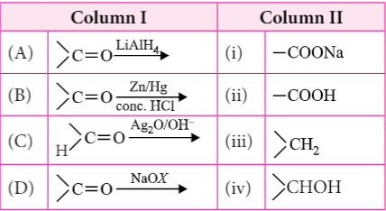
- (A) → (i), (B) → (ii), (C) → (iii), (D) → (iv)
- (A) → (iv), (B) → (iii), (C) → (ii), (D) → (i)
- (A) → (ii), (B) → (iv), (C) → (iii), (D) → (i)
- (A) → (iii), (B) → (i), (C) → (ii), (D) → (iv)
- phenol
- benzyl alcohol
- benzene
- benzoic acid
- orthophosphorous and pyrophosphorous acids
- pyrophosphorous and hypophosphoric acids
- orthophosphorous and hypophosphoric acids
- pyrophosphorous and pyrophosphoric acids.
- 2-propanol
- ethanal
- ethanol
- propane
Statement-II : In bromobenzene, the inductive effect of the bromo group is more dominant than the mesomeric effect in directing the incoming electrophile.
- Statement-I and statement-II are correct and statement-II is the correct explanation of statement-I.
- Statement-I and statement-II are correct but statement-II is not the correct explanation of statement-I.
- Statement-I is correct but statement-II is wrong.
- Statement-I is wrong but statement-II is correct.
- position isomerism
- chain isomerism
- tautomerism
- geometrical isomerism
- [Pt(NH3)4Cl3]Cl
- [Pt(NH3)4Cl2]Cl2
- [Pt(NH3)4Cl]Cl3
- [Pt(NH3)4Cl4]
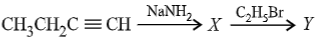
- 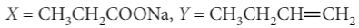
- 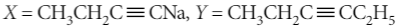

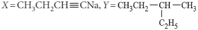
(en = H2NCH2CH2NH2; atomic numbers : Ti = 22; Cr = 24; Co = 27; Pt = 78)
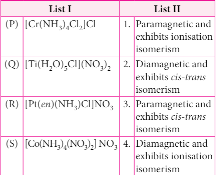
P,Q,R and S are respectively
- 4,2,3,1
- 3,1,4,2
- 2,1,3,4
- 1,3,4,2
Statement-II : The discharge potential of H+ ions is lower than alkali metal cation hence hydrogen is discharged at cathode instead of metal.
- Statement-I and statement-II are correct and statement-II is the correct explanation of statement-I.
- Statement-I and statement-II are correct but statement-II is not the correct explanation of statement-I.
- Statement-I is correct but statement-II is wrong.
- Statement-I is wrong but statement-II is correct.
- NH3 > C2H5NH2 > (C2H5)2NH > (C2H5)3N
- (C2H5)3N > (C2H5)2NH > C2H5NH2 > NH3
- (C2H5)2NH > C2H5NH2 > (C2H5)3N > NH3
- (C2H5)2NH > (C2H5)3N > C2H5NH2 > NH3
(QUESTION 41 - 45)
Read the given passage and answer the
questions from 41 to 45.
Molar conductivity (Λm) of an electrolyte is the
conducting power of all the ions produced by one mole
of it in a solution placed between two large electrodes one
centimetre apart. The molar conductivity of a solution
at any concentration is related to its conductivity (k) by
the relation Cm × Λm = k × 1000. Molar conductivity
of the electrolyte is highest at infinite dilution when
each ion of the electrolyte makes a definite contribution
towards the molar conductivity. Molar conductivity at
infinite dilution is called limiting molar conductivity
(Λ°m). The degree of dissociation of electrolyte at any
concentration can be obtained from the ratio of Λm/Λ°m.
The following questions are multiple choice questions.
Choose the most appropriate answer :
- 130 S cm2 mol–1
- 65 S cm2 mol–1
- 260 S cm2 mol–1
- 187 S cm2 mol–1
- 4.008%
- 40.800%
- 2.080%
- 20.800%
- 1.26 × 10–25 ohm–1 cm–1
- 1.26 × 10–3 ohm–1 cm–1
- 1.26 × 10–4 ohm–1 cm–1
- 0.0063 ohm–1 cm–1
- 124 S cm2 mol–1
- 204 S cm2 mol–1
- 101 S cm2 mol–1
- 300 S cm2 mol–1
- 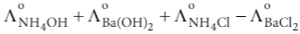
- 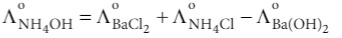
- 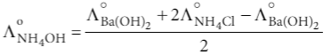
- None of these
(QUESTION 46-50)
The f-block elements are those in which the
differentiating electron enters the (n –2)f orbital. There
are two series of f-block elements corresponding to
filling of 4f and 5f-orbitals. The series of 4f-orbitals
is called lanthanides. Lanthanides show different
oxidation states depending upon stability of f0, f7 and
f14 configurations, though the most common oxidation
state is +3. There is a regular decrease in size of
lanthanides ions with increase in atomic number which
is known as lanthanide contraction.
The following questions are multiple choice questions.
Choose the most appropriate answer :
- 4f8, 4f11, 4f13
- 4f11, 4f8, 4f13
- 4f0, 4f2, 4f11
- 4f3, 4f7, 4f9
- Gd
- At
- Xe
- Te
- [Xe]4f106s2
- [Xe]4f15d16s2
- [Xe]4f145d106s2
- [Xe]4f75d16s2
- Cerium (Z = 58)
- Europium (Z = 63)
- Lanthanum (Z = 57)
- Gadolinium (Z = 64)
- Lanthanoid contraction is the accumulation of successive shrinkages.
- The different radii of Zr and Hf due to consequence of the lanthanoid contraction.
- Shielding power of 4f electrons is quite weak.
- There is a decrease in the radii of the atoms or ions as one proceeds from La to Lu.